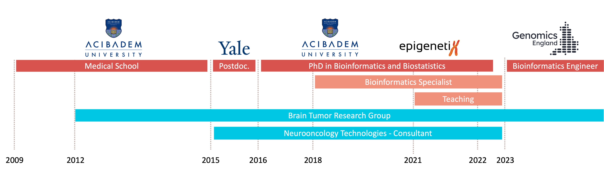
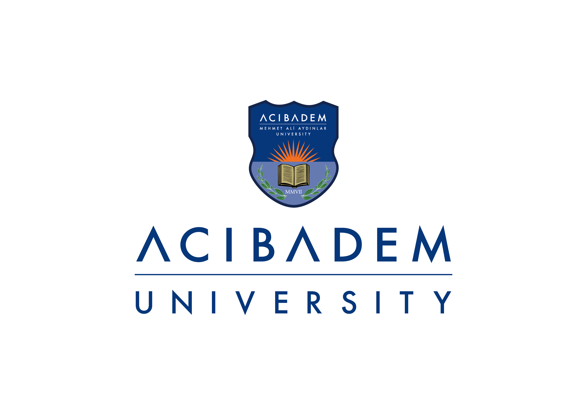

I’m an MD-PhD professional in bioinformatics with a medical degree from Acibadem University in 2015, postdoctoral experience at Yale University in 2016, followed by a PhD in Biostatistics and Bioinformatics in 2022. As of 2023, I’ve been working as a Bioinformatics Engineer at Genomics England, where I focus on maintaining and enhancing software for the cancer genomic medicine service.
My CV (PDF) is also available here

Developing features for and maintaining software for the cancer genomic medicine service.

Worked as a lecturer for the undergrad and grad courses on biostatistics and bioinformatics topics.
Worked on developing and maintaining multiple whole exome sequencing-based analysis pipelines (cancer and rare disease applications) for the Istambul-based medical diagnostics company.
Briefly worked as a post-doc associate at the Gunel Lab, Yale School of Medicine, where I had previously done multiple internships between 2011-2014. Research in neurogenetics, particularly malformations of cortical development and brain tumours, performing functional in-vitro analyses to investigate the effect of a SNP in the pathogenesis of gliomas.
Developed and maintained the Whole Exome Sequencing pipeline for the local medical diagnostics company based in Istanbul-Turkey. The pipeline allows for the identification of clinically-relevant genomics findings in brain tumours, especially regarding gliomas.
Participate in research on brain tumours, particularly on gliomas. I assist in biostatistical as well as bioinformatics analyses, focusing on the integration of molecular biological and clinical data to improve diagnosis, prognosis and treatment of glioma.